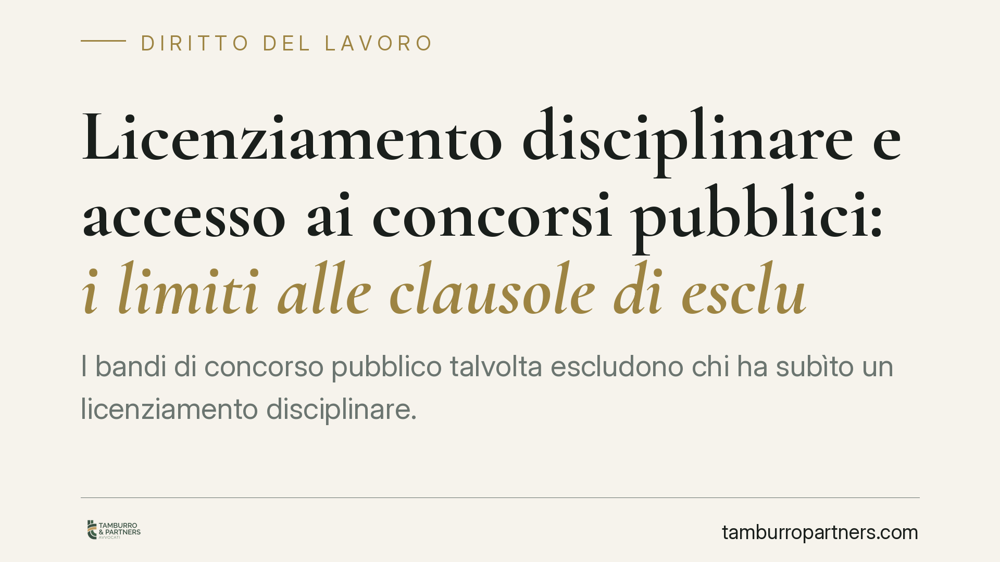

Licenziamento disciplinare e accesso ai concorsi pubblici: i limiti alle clausole di esclusione
I bandi di concorso pubblico talvolta escludono chi ha subìto un licenziamento disciplinare. La questione tocca un punto delicato: fino a che punto un datore pubblico può valutare il passato lavorativo del candidato? La risposta ruota attorno a tre criteri – temporaneità, attualità, proporzionalità – che segnano il confine tra requisito legittimo e preclusione illegittima.

Il tema
Alcune amministrazioni inseriscono nei bandi di concorso clausole che escludono i candidati già destinatari di un licenziamento disciplinare. La domanda giuridica è se una previsione di questo tipo sia compatibile con i principi che regolano l'accesso al pubblico impiego, oppure se introduca una barriera sproporzionata.
La materia è stata affrontata più volte dalla giurisprudenza amministrativa. L'orientamento consolidato distingue tra la valutazione dell'idoneità soggettiva del candidato – legittima entro certi limiti – e l'applicazione di una preclusione assoluta e permanente, che invece contrasta con l'ordinamento. Il presente contributo espone i principi generali, senza attribuirli a una singola pronuncia non verificabile.
Inquadramento normativo
L'accesso agli impieghi nelle pubbliche amministrazioni avviene, di regola, mediante concorso: lo prevede l'art. 97, quarto comma, della Costituzione. A ciò si affianca l'art. 51, primo comma, Cost., che garantisce a tutti i cittadini l'accesso alle cariche e agli uffici pubblici in condizioni di eguaglianza, secondo i requisiti stabiliti dalla legge.
Da questi due principi deriva un criterio di fondo: l'amministrazione può fissare requisiti di partecipazione, ma devono essere ragionevoli, proporzionati e funzionali all'interesse pubblico perseguito. Un requisito che esclude in modo automatico e definitivo una categoria di persone rischia di trasformarsi in una sanzione ulteriore e permanente, estranea alla logica concorsuale.
Qui emerge la distinzione centrale. Un conto è valutare se il candidato possieda l'affidabilità richiesta per quella specifica funzione: si tratta di un apprezzamento sull'idoneità soggettiva. Altro conto è far discendere dal licenziamento disciplinare una vera e propria incapacità a vita, che assumerebbe i caratteri di una pena accessoria non prevista dalla legge.
Le condizioni di legittimità
Secondo l'impostazione prevalente, una clausola di esclusione fondata su un pregresso licenziamento disciplinare può reggere soltanto se rispetta tre presupposti, da verificare congiuntamente.
Temporaneità. La preclusione deve avere una durata definita. Un'esclusione senza limiti di tempo, che accompagni il candidato per sempre, eccede la finalità di tutela dell'amministrazione e si risolve in una penalizzazione sine die.
Attualità. Il fatto che ha dato origine al licenziamento deve essere recente. Più il tempo trascorso è ampio, meno quel precedente dice qualcosa di utile sull'affidabilità presente del candidato. Un episodio risalente a molti anni prima ha un valore selettivo tendenzialmente nullo.
Proporzionalità. Deve esservi coerenza tra la gravità della condotta sanzionata e il tipo di impiego messo a concorso. L'esclusione ha senso quando il comportamento che ha causato il licenziamento è significativo rispetto alle mansioni da ricoprire; perde giustificazione quando riguarda ambiti del tutto estranei.
Un ulteriore aspetto riguarda la sorte del licenziamento sul piano giudiziale. Se il provvedimento espulsivo è stato annullato dal giudice del lavoro, viene meno lo stesso presupposto di fatto su cui la clausola si fonda: non esiste più un licenziamento disciplinare valido da opporre al candidato. L'esclusione, in tal caso, resta priva di base.
Implicazioni pratiche
Per il candidato, la presenza di una clausola di questo tipo nel bando non equivale automaticamente a un'esclusione insuperabile. Occorre leggere la previsione alla luce dei tre criteri: una clausola generica, senza limiti temporali o indifferente alla natura della condotta, è più esposta a censura.
Per l'amministrazione, il margine di discrezionalità esiste ma è vincolato. Redigere una clausola troppo ampia espone il bando al rischio di impugnazione e di annullamento in sede giurisdizionale.
Cosa fare in concreto
- Leggere con attenzione la clausola del bando: verificare se indica un arco temporale di preclusione e se collega l'esclusione al tipo di mansione.
- Ricostruire la vicenda disciplinare: data del licenziamento, motivazione e stato di eventuali contenziosi davanti al giudice del lavoro.
- Valutare l'attualità del precedente rispetto alla data di pubblicazione del bando.
- Conservare la documentazione utile, incluse eventuali pronunce che abbiano annullato o modificato il provvedimento espulsivo.
- Tenere presente che l'eventuale impugnazione di un atto della procedura concorsuale davanti al TAR segue, di regola, il termine di sessanta giorni previsto dall'art. 29 del Codice del processo amministrativo.
La valutazione di temporaneità, attualità e proporzionalità va sempre condotta sul singolo bando e sulla specifica vicenda, perché l'esito dipende dalle circostanze concrete.
Ogni storia di lavoro ha i suoi tempi.
Se gestisci HR e vuoi un confronto su contenzioso, ispezioni o licenziamenti, scrivi allo studio. Ti rispondiamo entro un giorno lavorativo.